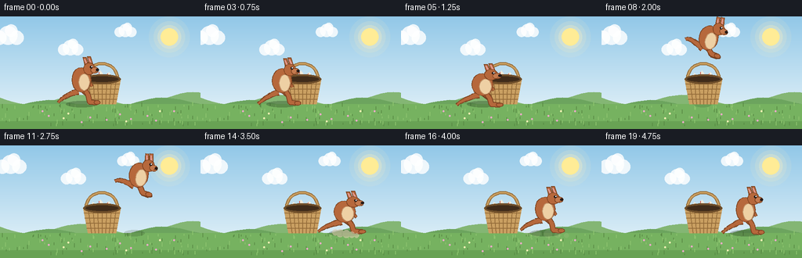
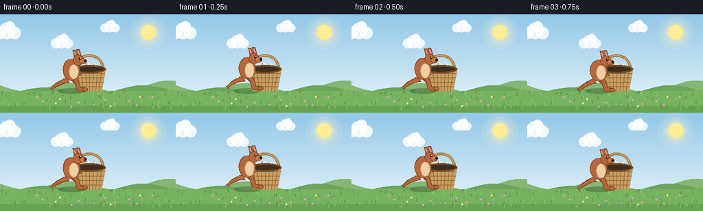

CODING AGENTS AS PIXEL WORLD MODELS
traex/Seed-2.1-Pro-0915 · dynamic_spatial_relationship_0033
点击播放 · 原生 RGB 像素
逐轮保存的候选
回放视频、检查图与代码变化。
每份候选均可单独播放。实际图片检查记录在下方工具轨迹中。
候选 01播放与检查图
点击播放 · 原生 RGB 像素


展开代码变化
--- 上一保存版本
+++ 本次保存版本
@@ -0,0 +1,338 @@
+"""Procedural text-to-video generation.
+
+Prompt: "A kangaroo is in front of a basket, then the kangaroo jumps to the
+right of the basket."
+
+Renders 20 RGB frames (256x144, 4 fps) entirely with PIL/numpy geometry:
+a static meadow scene with a wicker basket, and a kangaroo built from
+primitives whose pose is driven by an idle -> tucked jump -> landing
+state machine.
+"""
+import math
+
+import numpy as np
+from PIL import Image, ImageDraw
+
+import artifact_io
+
+W, H, N, FPS = 256, 144, 20, 4.0
+SS = 2 # supersampling factor for smooth edges
+
+GROUND_Y = 112
+BASKET_CX = 130
+X_START, X_END = 104, 184
+JUMP_H = 58
+
+BODY = (182, 104, 60)
+BODY_DARK = (126, 68, 34)
+CREAM = (238, 208, 164)
+EAR_INNER = (224, 152, 142)
+INK = (38, 26, 22)
+
+WICKER = (202, 160, 98)
+WICKER_DARK = (148, 108, 58)
+RIM = (110, 78, 42)
+BASKET_INNER = (64, 44, 26)
+CLOTH = (240, 234, 218)
+CLOTH_STRIPE = (206, 96, 84)
+
+
+def smoothstep(t):
+ return t * t * (3 - 2 * t)
+
+
+def lerp(a, b, t):
+ return a + (b - a) * t
+
+
+def circle_pts(cx, cy, rx, ry=None, n=18):
+ if ry is None:
+ ry = rx
+ return [(cx + rx * math.cos(2 * math.pi * i / n),
+ cy + ry * math.sin(2 * math.pi * i / n)) for i in range(n)]
+
+
+def quad_chain(p0, p1, p2, steps=12):
+ pts = []
+ for i in range(steps + 1):
+ a = i / steps
+ x = (1 - a) ** 2 * p0[0] + 2 * (1 - a) * a * p1[0] + a ** 2 * p2[0]
+ y = (1 - a) ** 2 * p0[1] + 2 * (1 - a) * a * p1[1] + a ** 2 * p2[1]
+ pts.append((x, y))
+ return pts
+
+
+def background(frame):
+ """Sky, sun, drifting clouds, hills, grass."""
+ img = Image.new("RGB", (W * SS, H * SS))
+ px = img.load()
+ top = np.array([146, 200, 232])
+ horizon = np.array([216, 236, 246])
+ for y in range(GROUND_Y * SS):
+ t = y / (GROUND_Y * SS)
+ col = tuple((top * (1 - t) + horizon * t).astype(np.uint8))
+ for x in range(W * SS):
+ px[x, y] = col
+ draw = ImageDraw.Draw(img, "RGBA")
+
+ # Sun with soft glow
+ sx, sy = 216 * SS, 26 * SS
+ for r, a in ((26, 26), (20, 40), (15, 70)):
+ draw.ellipse([sx - r * SS, sy - r * SS, sx + r * SS, sy + r * SS],
+ fill=(255, 240, 190, a))
+ draw.ellipse([sx - 11 * SS, sy - 11 * SS, sx + 11 * SS, sy + 11 * SS],
+ fill=(255, 236, 150, 255))
+
+ # Drifting clouds
+ for base_x, y, scale in ((40, 24, 1.0), (120, 40, 0.8), (190, 18, 0.7)):
+ cx = (base_x + frame * 0.35) % (W + 60) - 30
+ for dx, dy, r in ((0, 0, 12), (11, 3, 9), (-11, 3, 9), (4, -6, 8)):
+ x = (cx + dx * scale) * SS
+ yy = (y + dy * scale) * SS
+ rr = r * scale * SS
+ draw.ellipse([x - rr, yy - rr, x + rr, yy + rr],
+ fill=(255, 255, 255, 210))
+
+ # Layered hills
+ def hill(base, color, amp, phase):
+ pts = [(-10 * SS, GROUND_Y * SS)]
+ for x in range(-10, W + 12, 8):
+ y = base + amp * math.sin((x + phase) * 0.045) + \
+ amp * 0.5 * math.sin((x + phase) * 0.013)
+ pts.append((x * SS, y * SS))
+ pts.append(((W + 10) * SS, GROUND_Y * SS))
+ draw.polygon(pts, fill=color)
+
+ hill(104, (132, 182, 116), 7, 0)
+ hill(110, (108, 164, 94), 6, 40)
+
+ # Grass field
+ draw.rectangle([0, GROUND_Y * SS, W * SS, H * SS], fill=(118, 178, 96))
+ draw.rectangle([0, (GROUND_Y + 22) * SS, W * SS, H * SS],
+ fill=(104, 162, 84))
+ rng = np.random.default_rng(7)
+ for _ in range(110):
+ x = int(rng.integers(2, W - 2))
+ y = int(rng.integers(GROUND_Y + 2, H - 3))
+ h = int(rng.integers(2, 6))
+ c = (90, 140, 70) if rng.random() < 0.5 else (140, 196, 110)
+ draw.line([x * SS, y * SS, x * SS, (y - h) * SS], fill=c, width=SS)
+ for _ in range(14): # tiny flowers
+ x = int(rng.integers(6, W - 6))
+ y = int(rng.integers(GROUND_Y + 6, H - 8))
+ col = (245, 240, 180) if rng.random() < 0.5 else (235, 170, 200)
+ draw.ellipse([(x - 1) * SS, (y - 1) * SS, (x + 1) * SS, (y + 1) * SS],
+ fill=col)
+ return img
+
+
+def draw_basket(img):
+ draw = ImageDraw.Draw(img, "RGBA")
+ cx, top_y, bot_y = BASKET_CX, 80, GROUND_Y
+ top_half, bot_half = 24, 18
+
+ # Handle (behind body)
+ handle = []
+ for i in range(17):
+ a = math.pi * i / 16
+ handle.append(((cx - 20 * math.cos(a)) * SS,
+ (top_y - 20 * math.sin(a)) * SS))
+ draw.line(handle, fill=WICKER_DARK, width=4 * SS, joint="curve")
+ draw.line(handle, fill=WICKER, width=2 * SS, joint="curve")
+
+ # Cloth peeking over the rim
+ cloth = [(cx - 14, top_y + 2), (cx - 12, top_y - 8),
+ (cx - 6, top_y - 3), (cx - 2, top_y - 11),
+ (cx + 3, top_y - 4), (cx + 9, top_y - 9),
+ (cx + 13, top_y - 2), (cx + 15, top_y + 2)]
+ draw.polygon([(x * SS, y * SS) for x, y in cloth], fill=CLOTH)
+ draw.line([(cx - 4) * SS, (top_y - 9) * SS,
+ (cx - 4) * SS, top_y * SS], fill=CLOTH_STRIPE, width=SS)
+ draw.line([(cx + 7) * SS, (top_y - 7) * SS,
+ (cx + 7) * SS, top_y * SS], fill=CLOTH_STRIPE, width=SS)
+
+ # Trapezoid body
+ body = [(cx - top_half, top_y), (cx + top_half, top_y),
+ (cx + bot_half, bot_y), (cx - bot_half, bot_y)]
+ draw.polygon([(x * SS, y * SS) for x, y in body], fill=WICKER)
+ # Vertical weave
+ for i in range(-3, 4):
+ xt = cx + i * 6
+ xb = cx + i * 4.5
+ draw.line([xt * SS, top_y * SS, xb * SS, bot_y * SS],
+ fill=WICKER_DARK, width=SS)
+ # Horizontal rows
+ for j in range(1, 5):
+ t = j / 5
+ y = lerp(top_y, bot_y, t)
+ half = lerp(top_half, bot_half, t)
+ draw.line([(cx - half) * SS, y * SS, (cx + half) * SS, y * SS],
+ fill=WICKER_DARK, width=SS)
+ # Rim with dark interior
+ draw.ellipse([(cx - top_half) * SS, (top_y - 6) * SS,
+ (cx + top_half) * SS, (top_y + 6) * SS], fill=RIM)
+ draw.ellipse([(cx - top_half + 3) * SS, (top_y - 3.5) * SS,
+ (cx + top_half - 3) * SS, (top_y + 3.5) * SS],
+ fill=BASKET_INNER)
+
+
+def draw_kangaroo(img, ax, feet_y, sy, tilt_deg, tuck, sway, phase):
+ """Kangaroo in local coords (y up, facing +x), anchored at feet."""
+ layer = Image.new("RGBA", (W * SS, H * SS), (0, 0, 0, 0))
+ d = ImageDraw.Draw(layer, "RGBA")
+ theta = -math.radians(tilt_deg)
+ c, s = math.cos(theta), math.sin(theta)
+ sx_factor = 2 - sy # mild complementary squash
+
+ def T(p):
+ lx, ly = p[0] * sx_factor, p[1] * sy
+ rx = lx * c - ly * s
+ ry = lx * s + ly * c
+ return (ax + rx) * SS, (feet_y - ry) * SS
+
+ def poly(points, fill, outline=BODY_DARK, width=1.4):
+ q = [T(p) for p in points]
+ d.polygon(q, fill=fill)
+ d.line(q + [q[0]], fill=outline, width=max(1, int(width * SS)))
+
+ def stroke(points, fill, width):
+ q = [T(p) for p in points]
+ d.line(q, fill=fill, width=max(1, int(width * SS)), joint="curve")
+
+ def ellipse(cen, rx, ry, fill, outline=None, width=1.2):
+ poly(circle_pts(cen[0], cen[1], rx, ry, 20), fill,
+ outline if outline else fill, width)
+
+ # --- Tail (quadratic curve, sweeps up while airborne) ---
+ base = (-4, 16)
+ ctrl = (lerp(-20, -24, tuck), lerp(12, 28, tuck) + sway)
+ tip = (lerp(-30, -28, tuck), lerp(2, 24, tuck) + sway * 0.6)
+ chain = quad_chain(base, ctrl, tip, 12)
+ for i in range(len(chain) - 1):
+ w = lerp(7.2, 2.6, i / (len(chain) - 1))
+ stroke([chain[i], chain[i + 1]], BODY_DARK, w + 1.6)
+ for i in range(len(chain) - 1):
+ w = lerp(6.4, 2.0, i / (len(chain) - 1))
+ stroke([chain[i], chain[i + 1]], BODY, w)
+
+ # --- Hind legs (far one darker) ---
+ def leg(xoff, color, dark, tuck_shift):
+ k = max(0.0, min(1.0, tuck + tuck_shift))
+ hip = (xoff, 22)
+ knee = (lerp(8, 4, k), lerp(12, 17, k))
+ ankle = (lerp(10, 8, k), lerp(3, 13, k))
+ toe = (lerp(20, 16, k), lerp(2, 12, k))
+ seg = [hip, knee, ankle, toe]
+ stroke(seg, dark, 7)
+ stroke(seg, color, 5.2)
+ ellipse(toe, 4.2, 2.4, color, dark, 1.0)
+
+ leg(-3, (160, 88, 48), (108, 58, 30), -0.08)
+ leg(2, BODY, BODY_DARK, 0.0)
+
+ # --- Arms (small, swing back in flight) ---
+ for xoff, col, dark in ((5, (166, 92, 52), (112, 60, 30)),
+ (8, BODY, BODY_DARK)):
+ shoulder = (xoff, 33)
+ paw = (lerp(13, 1, tuck), lerp(23, 27, tuck))
+ stroke([shoulder, paw], dark, 4.2)
+ stroke([shoulder, paw], col, 2.8)
+
+ # --- Body and belly ---
+ ellipse((0, 31), 12.5, 15.5, BODY, BODY_DARK, 1.4)
+ ellipse((3.5, 28), 7.2, 10.5, CREAM, (196, 150, 108), 1.0)
+
+ # --- Ears (drawn before head so bases tuck in) ---
+ for base_pt, tip_pt in ((7, 51), (12.5, 52)):
+ bx = base_pt
+ tx = lerp(bx - 3, bx - 1, tuck)
+ ty = tip_pt + 9
+ ear = [(bx - 2.2, tip_pt - 2), (tx - 1.8, ty),
+ (tx + 1.8, ty), (bx + 2.2, tip_pt - 2)]
+ poly(ear, BODY, BODY_DARK, 1.2)
+ inner = [(bx - 0.9, tip_pt), (tx - 0.7, ty - 2.5),
+ (tx + 0.7, ty - 2.5), (bx + 0.9, tip_pt)]
+ poly(inner, EAR_INNER, EAR_INNER, 0.8)
+
+ # --- Head, snout, face ---
+ ellipse((10, 45), 7.8, 7.4, BODY, BODY_DARK, 1.4)
+ ellipse((16.8, 43.2), 5.2, 3.6, (196, 122, 78), BODY_DARK, 1.0)
+ ellipse((20.4, 43.6), 1.9, 1.6, INK, INK, 0.8)
+ ellipse((12.6, 47.2), 1.7, 1.7, INK, INK, 0.8)
+ ellipse((13.1, 47.7), 0.6, 0.6, (255, 255, 255), (255, 255, 255), 0.4)
+ # mouth tick
+ stroke([(17.5, 41.6), (19.4, 41.9)], BODY_DARK, 1.0)
+
+ img.alpha_composite(layer)
+
+
+def frame_state(f):
+ """Return kangaroo placement/pose for frame f."""
+ if f <= 4: # idle in front of the basket
+ bob = 1.6 * math.sin(2 * math.pi * f / 5)
+ sy = 1.0 + 0.02 * math.sin(2 * math.pi * f / 5)
+ return dict(x=X_START, lift=bob, sy=sy, tilt=0.0, tuck=0.0,
+ sway=1.8 * math.sin(2 * math.pi * f / 5), dust=0.0)
+ if f <= 13: # jump arc
+ u = (f - 5) / 8
+ k = math.sin(math.pi * u)
+ x = lerp(X_START, X_END, smoothstep(u))
+ lift = JUMP_H * 4 * u * (1 - u)
+ crouch = 3.0 * (1 - min(1, u * 4)) if u < 0.25 else 0.0
+ sy = 1.0 - 0.10 * (1 - min(1, u * 4)) if u < 0.25 else 1.0
+ return dict(x=x, lift=lift - crouch, sy=sy,
+ tilt=15 * k, tilt2=0, tuck=k, sway=0.0, dust=0.0)
+ # landing and settling on the right
+ j = f - 14
+ squash = max(0.0, 0.12 - j * 0.04)
+ bob = 1.2 * math.sin(2 * math.pi * j / 6) if j >= 2 else 0.0
+ return dict(x=X_END, lift=bob, sy=1.0 - squash, tilt=0.0, tuck=0.0,
+ sway=1.6 * math.sin(2 * math.pi * j / 6),
+ dust=max(0.0, 1.0 - j / 2.5))
+
+
+def render_frame(f):
+ img = background(f).convert("RGBA")
+ st = frame_state(f)
+ feet_y = GROUND_Y - st["lift"]
+
+ # Ground shadow shrinks and fades with height
+ shadow = Image.new("RGBA", img.size, (0, 0, 0, 0))
+ sd = ImageDraw.Draw(shadow)
+ h_ratio = min(1.0, max(0.0, st["lift"] / JUMP_H))
+ rx = 20 * (1 - 0.45 * h_ratio)
+ alpha = int(78 * (1 - 0.55 * h_ratio))
+ sd.ellipse([(st["x"] - rx) * SS, (GROUND_Y - 4) * SS,
+ (st["x"] + rx) * SS, (GROUND_Y + 4) * SS],
+ fill=(30, 50, 25, alpha))
+ img.alpha_composite(shadow)
+
+ draw_basket(img)
+ draw_kangaroo(img, st["x"], feet_y, st["sy"], st["tilt"],
+ st["tuck"], st["sway"], f)
+
+ # Landing dust puffs
+ if st["dust"] > 0:
+ dust = Image.new("RGBA", img.size, (0, 0, 0, 0))
+ dd = ImageDraw.Draw(dust)
+ for i, (dx, r) in enumerate(((-12, 4), (-6, 5), (2, 5),
+ (9, 4), (15, 3))):
+ px = st["x"] + dx * (2 - st["dust"])
+ py = GROUND_Y - 1 + i
+ a = int(150 * st["dust"])
+ dd.ellipse([(px - r) * SS, (py - r) * SS,
+ (px + r) * SS, (py + r) * SS],
+ fill=(220, 205, 175, a))
+ img.alpha_composite(dust)
+
+ return np.asarray(img.convert("RGB").resize((W, H), Image.LANCZOS))
+
+
+def main():
+ frames = [render_frame(f) for f in range(N)]
+ artifact_io.save(np.stack(frames).astype(np.uint8), ".")
+ print(f"Saved {N} frames at {W}x{H}, {FPS} fps")
+
+
+if __name__ == "__main__":
+ main()
可观测工具轨迹
实际执行的命令与返回图片。
命令 1exit 0
/bin/bash -lc 'ls -la; cat prompt.txt; echo "---"; cat GENERATION_RULES.md; echo "---"; cat task_spec.json'
命令 2exit 0
/bin/bash -lc 'cat artifact_io.py'
命令 3exit 0
/bin/bash -lc 'python -c "import numpy, PIL; print(numpy.__version__, PIL.__version__)"'
命令 4exit 0
/bin/bash -lc 'cd "$(pwd)" && time python generate.py && ls -la'
保存候选 1 份；完成命令 4 次；可验证图片返回 0 张。原始 API 响应与完整日志保留在本地。